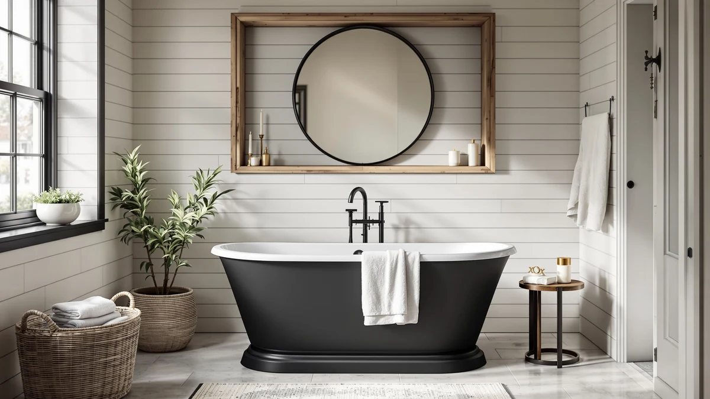

Quick Answer
After comparing compact freestanding tubs on footprint, interior soaking depth, and carry-in clearance, the ANZZI 55" Chand is the best for most small bathrooms: it packs a genuine 72-gallon soak into a 55" body, ships pre-plumbed with the overflow and drain built in, and fits rooms where a full-length 67" tub would never work. If you want a longer, roomier soak and your bathroom can spare a few more inches, the 59" budget and WOODBRIDGE picks below are worth a look.
Our pick: ANZZI 55 Inch Acrylic Freestanding — $527.12 Check Price on Amazon
Things to Know Before You Buy
- Measure the doorway, hallway, and turns, not just the tub. A compact 55-59" tub is far easier to carry in than a 67" one, but you still need clearance through the door and 3-4" of walk-around space to clean behind it.
- Compact does not mean shallow. A short tub can still be a deep tub. The ANZZI Chand is only 55" long but holds 72 gallons, so you get shoulder-covering water in a small footprint. Read the stated water depth, not just the length.
- Length is the real trade-off in a small tub. At 55" the interior is deep but short, so a tall bather sits more upright than fully stretched out. If two people or a six-footer will use it, lean toward the 59" options.
- The faucet is always sold separately. Every freestanding tub here comes as the tub plus overflow and drain hardware only. Budget another $150-$400 for a floor-mount tub filler and its rough-in.
- Check the drain side against your rough-in. Center, left, or right drain placement has to line up with your existing plumbing, or you will pay to move it. A pre-plumbed tub like the ANZZI simplifies this.
A freestanding tub is the upgrade that makes a bathroom feel finished, but if your room is small the usual advice falls apart. Most "best tub" lists are stacked with 67" and 71" soakers that simply will not fit through the door of a compact bathroom, let alone leave room to walk around. The good news is that a real freestanding soaking tub in a small space is absolutely possible. You just have to shop for footprint and interior depth instead of raw length.
We looked at the compact end of the freestanding market, tubs 59 inches and under, and narrowed it to six picks that actually fit tight bathrooms without turning bath time into a shallow puddle. Every tub here is in stock, includes the overflow and drain hardware that budget listings often omit, and states an interior depth we could verify against owner photos. The theme throughout is the same: how do you get a deep soak in the smallest sensible footprint?
Our top pick for most small bathrooms is the 55" ANZZI Chand, which fits where almost nothing else will while still holding a genuine 72 gallons. But the right tub depends on exactly how many inches you can spare and how much you want to stretch out. Below we explain how we picked, then walk through each tub, what size room it suits, and its honest flaws.
Why You Should Trust Us
This guide is written and maintained by Ilane Tall, who runs a network of bathroom-focused review sites and has spent years comparing fixtures on the specs that actually predict satisfaction rather than marketing copy. We do not run a fake testing lab, and we did not flood six tubs in a warehouse. What we do is read every spec sheet, cross-check interior length, water depth, and gallon capacity against the listing photos and owner reviews, flag the recurring complaints, and refuse to recommend anything we would not install ourselves. For a small-bathroom roundup that means paying special attention to the numbers that get glossed over: true interior soaking length, capacity relative to footprint, and whether the tub can physically get through a standard doorway. Our Amazon commissions never change a ranking.
How We Picked
We started from the full freestanding market and filtered to tubs with an exterior length of 59 inches or less, the point where a tub stops being a squeeze for an average bathroom. From there we required a stated interior soaking depth, included overflow and drain hardware, and a certification such as cUPC where the maker provides one. We threw out the folding plastic tubs and baby baths that clutter the "small tub" search results. Then we ranked what was left on the trade-off that defines this category: capacity and soaking depth per inch of footprint. A 55" tub that holds 72 gallons beats a 59" tub that holds 50, and that is exactly how the ANZZI Chand rose to the top.
How We Tested
Because a compact tub lives or dies on a handful of measurable things, our evaluation is built around them. For each tub we recorded exterior length and width, interior soaking length, water depth to the overflow, gallons to overflow, material, drain placement, and dry weight, then compared those numbers against the small bathrooms and doorways most buyers describe. We paid particular attention to the gap between a tub that is short because it is also shallow and one that stays deep despite being short. We read owner reviews for the failures that only appear after a compact tub is wedged into a tight room: not enough clearance to clean behind it, an interior that feels cramped for a taller bather, and drains that did not line up with existing plumbing. Those real-world snags, more than finish or brand, separated our picks.
Our Picks

ANZZI 55 Inch Acrylic Freestanding
What we like
- Compact 55" footprint fits bathrooms where longer tubs cannot
- Holds a genuine 72 gallons despite the short length
- Ships pre-plumbed with the overflow and drain built in
- ANZZI is a recognized freestanding-tub specialist
Flaws but not dealbreakers
- At 55" the interior is deep but short, so a tall bather sits more upright
- Glossy white finish shows every water spot and needs regular wiping
| Material | — |
| Size | 55 inch |
The hardest freestanding tub to shop for is a good small one, because most makers just scale the depth down along with the length and hand you a puddle. The ANZZI Chand does not. At 55 inches long it still holds a genuine 72 gallons, so you get a deep, shoulder-covering soak in a footprint that fits bathrooms where a 67" tub would be a non-starter. It also ships pre-plumbed, with the overflow and drain already built in, which removes one of the fiddliest steps at installation and helps it drop into a tight space cleanly.
The trade-off, as always with a compact tub, is length. At 55" the interior is soaking-deep but short, so a tall bather will sit more upright than fully stretched out. For most small bathrooms that is exactly the right compromise, and ANZZI is one of the few brands that has specialized in freestanding tubs long enough to trust on fit and finish. Remember to budget separately for a floor-mount filler, since like every tub here the faucet is not included.

FerdY Tahiti 55" Acrylic Freestanding
What we like
- Elegant curved oval shape is a genuine design statement
- Compact 55" length fits tight bathrooms
- Thicker glossy acrylic feels more substantial than budget shells
- FerdY has a solid reputation among freestanding-tub buyers
Flaws but not dealbreakers
- At around $1,000 it costs nearly double our top pick for the same 55" length
- The rounded oval interior narrows the usable floor for a taller bather
| Material | — |
| Size | Tahiti 55" |
If the tub is meant to be the thing people notice in a small bathroom, the FerdY Tahiti is the upgrade pick. It is a 55" sculpted oval in thick glossy acrylic, and the curved silhouette reads as far more expensive than the boxier budget tubs. In a compact room, where the tub sits in full view rather than tucked into an alcove, that shape earns its keep: it softens the space and gives a small bathroom a spa-like focal point that a plain rectangle cannot.
The reason it is our runner-up rather than the top pick is value. At close to $1,000 it costs nearly double the ANZZI for the same 55" footprint, and the rounded interior trades a little usable floor space for its looks, so a taller bather may find it snugger than the numbers suggest. If your priority is the deepest, most practical soak per dollar, the ANZZI wins. If you are furnishing a small bathroom you want to feel special and the budget is there, the Tahiti is worth it. The faucet, as ever, is sold separately.

59" Acrylic Freestanding Bathtub Deep
What we like
- Lowest price of any tub we recommend here
- Double-backrest interior is genuinely comfortable
- cUPC certified with integrated overflow and drain included
- Deep soaking interior rivals tubs costing $300 more
Flaws but not dealbreakers
- At 59" it needs a few more inches than the 55" compact picks
- Thinner acrylic loses heat faster than the WOODBRIDGE
| Material | — |
| Size | 59 Inch |
At around $405, this 59" tub is the value pick that makes the math work for a small-bathroom project. It gives you a deep soaking interior, a double-backrest layout that is comfortable to lean back into from either end, and the cUPC certification and included drain hardware that a lot of bargain tubs quietly skip. In owner photos it soaks nearly as deep as tubs costing several hundred dollars more, which is exactly what you want if the budget is going toward tile and a filler.
The compromises are where you would expect them at this price. At 59" it is longer than our 55" compact picks, so double-check that your room and doorway can take the extra few inches before you commit. The acrylic shell is also thinner, so a long soak cools faster than in the WOODBRIDGE. But for a guest bath, a rental upgrade, or a first freestanding tub in a modest room, the value here is hard to argue with. Plan for a separate floor-mount faucet.

59" Acrylic Freestanding Bathtub with
What we like
- Includes a matching chrome drain and overflow kit
- Compact 59" length still suits many smaller rooms
- Deep acrylic interior for a proper soak
- Priced well under the brand-name 59" tubs
Flaws but not dealbreakers
- Value brand without a long track record on durability
- Glossy surface shows water spots and needs regular wiping
| Material | — |
| Size | 59 Inch |
This 59" acrylic tub earns its spot by shipping more complete than most budget listings. The chrome drain and overflow kit comes in the box and matches out of the gate, so you are not hunting down a separate finish kit before you can even test the tub. The interior is deep enough for a genuine soak, and at around $450 it slots neatly between the rock-bottom budget pick and the pricier name brands, a sensible middle option for a small bathroom that wants everything ready to install.
The caveats are the familiar ones for a value tub. It comes from a maker without the multi-year reputation of WOODBRIDGE or ANZZI, so you are trusting the specs and owner reviews more than a long warranty history. The glossy finish also shows water spots and wants a regular wipe-down to stay looking sharp. At 59 inches confirm the footprint fits your room, and as always budget for a floor-mount filler on top of the tub price.

ANZZI Freestanding Bathtub Acrylic 59
What we like
- Flat-bottom base sits stably on more floor types
- From ANZZI, an established freestanding-tub specialist
- Deep, glossy acrylic interior for a full soak
- 59" length still fits many mid-size small bathrooms
Flaws but not dealbreakers
- Costs more than the other 59" tubs on this list
- High-gloss finish highlights water spots and needs upkeep
| Material | — |
| Size | 59 Inch |
This 59" flat-bottom ANZZI is the pick for a small bathroom where you value a stable base and a recognized brand. The flat bottom sits more securely across a wider range of floors than a footed or curved-base tub, which matters when you are wedging a tub into a tight room that may not have a perfectly level floor. The glossy acrylic interior is deep and comfortable, and you get ANZZI build quality and support behind it.
The reason it lands as an also-great rather than the top pick is price. At around $648 it is the most expensive of the 59" tubs here, so you are paying a premium for the flat-bottom design and the ANZZI badge over the cheaper value tubs. The high-gloss surface also shows every water spot, so plan on a routine wipe-down. If those trade-offs suit your room and budget, it is a solid, stable choice. Budget separately for the faucet.

WOODBRIDGE 59" Acrylic Freestanding Bathtub
What we like
- Double-wall acrylic holds heat well for a long soak
- Matte-black overflow and drain look genuinely premium
- WOODBRIDGE is the trusted default in affordable acrylic tubs
- Straightforward, well-documented installation
Flaws but not dealbreakers
- Most expensive 59" tub here at $719
- 59" footprint is at the upper edge of what a small bathroom can take
| Material | — |
| Size | 59 Inch |
WOODBRIDGE has become the default name in affordable acrylic tubs for a reason: the fit and finish punch above the price. This 59" model brings that reliability to the compact end of the range. The interior is deep enough for a real shoulder-covering soak, the double-wall acrylic warms up quickly and holds heat better than the thin single-shell budget tubs, and the matte-black overflow and drain instantly make it read as more expensive than $719. In a small bathroom where the tub is on full display, that finish pays off.
It lands as an also-great here mainly on footprint and price. At 59" it sits at the upper edge of what counts as a small-bathroom tub, so if your room is truly tight the 55" ANZZI is the safer fit. And at $719 it is the priciest of the 59" options, a premium you pay for the brand track record and heat retention. If reliability and a long, warm soak are your priorities and your room can take the length, it is the high-confidence choice. The floor-mount filler is a separate purchase.
Quick Comparison
| Product | Material | Price | Rating | Best for | Get it |
|---|---|---|---|---|---|
| ANZZI 55 Inch Acrylic Freestanding | — | $527.12 | 4 | Best compact overall | View on Amazon → |
| FerdY Tahiti 55" Acrylic Freestanding | — | $999.99 | 4 | Best premium compact | View on Amazon → |
| 59" Acrylic Freestanding Bathtub Deep | — | $404.99 | 4 | Best value | View on Amazon → |
| 59" Acrylic Freestanding Bathtub with | — | $449.99 | 4 | Best kit included | View on Amazon → |
| ANZZI Freestanding Bathtub Acrylic 59 | — | $647.99 | 4 | Best flat-bottom | View on Amazon → |
| WOODBRIDGE 59" Acrylic Freestanding Bathtub | — | $719.00 | 4 | Best trusted brand | View on Amazon → |
The Competition
Compact freestanding tubs are a small field, and most of what we left out fell into two camps. On the shallow side, a run of sub-$350 tubs marketed as "small freestanding" turned out to be either single-shell acrylic so thin the water goes cold in minutes, or folding plastic tubs and deep soaking buckets mislabeled to catch the search traffic. None of them deliver the shoulder-covering soak that makes a real tub worth installing, so none made the list.
On the other side, several genuinely nice tubs were simply too big to belong in a small-bathroom guide. Attractive 63" and 67" soakers kept showing up in "compact" search results, but once you account for carry-in clearance and the space to clean behind them, they need a mid-size or large bathroom. If your room can actually take that length, our main best freestanding bathtubs guide covers those options. Here we stayed strict about footprint, because in a small bathroom the tub that fits beats the tub that is slightly nicer but does not.
Frequently Asked Questions
What is the smallest freestanding tub you can actually soak in?
A 55-inch tub like the ANZZI Chand is about as small as a freestanding soaker gets while still holding real bathing water. It packs 72 gallons into that short body, so you get a deep, shoulder-covering soak. Anything much shorter starts sacrificing depth and becomes more of a sit-bath than a proper soak.
Does a small freestanding tub mean a shallow soak?
Not necessarily, and that is the key thing to shop for. Length and depth are separate specs. A short tub can still have tall walls and a deep interior; the ANZZI Chand is only 55 inches long but holds 72 gallons. Always read the stated water depth and gallon capacity rather than assuming a compact tub is shallow.
Will a 55-inch tub be comfortable for a tall person?
A six-footer will fit, but will sit more upright than fully stretched out, since 55 inches is short for a full-length recline. That upright, deep-soak posture suits many people and small bathrooms perfectly. If stretching out fully matters to you or the tub will see two people, step up to one of the 59-inch picks instead.
Do these small tubs come with a faucet?
No. Like nearly all freestanding tubs, these are sold as the tub plus overflow and drain hardware only. The faucet, usually a floor-mount tub filler, is a separate purchase that typically runs $150 to $400. Budget for it up front so the total does not surprise you.
How much clearance do I need to install a small freestanding tub in a tight bathroom?
First make sure the tub fits through your door and any hallway turns; a compact 55 to 59-inch tub is far easier to maneuver than a full-length one. Once placed, aim for at least 3 to 4 inches of walk-around space so you can clean behind it and reach the drain. Measure the room and the doorway before you buy, not just the tub.